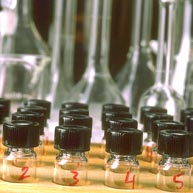

History
Farm Life
Animals
Crops
Food
Soils
Sustainable Agric.
Careers
Activities
Quizzes
Glossary
Convrsn. Calculator
Convrsn. Table
|
|
The word agriculture is derived from two Latin words; agri, meaning field; and cultura, to cultivate. Cultivated land occupies only 11% of the world's land resources but produces about 95% of the world's food.
|
|
The agri-food industry includes crop and animal production, the agribusiness sectors that supply herbicides and fertilizers, and the food processing and marketing components that link farms with consumers. Saskatchewan's agriculture is still dominated by wheat production which accounts for 44% of the three billion dollars in annual farm cash receipts. But times are changing, there are fewer farms and they are getting larger. Farmers continue to diversify into alternative crops and large scale animal production. | |
|
History
Travel back to the beginning of agriculture in Canada. Learn how our forefathers started in Saskatchewan's trademark industry. What happened during the "dirty thirties"? Discover the huge advances Saskatchewan agriculture has undergone to overcome technological obstacles and become a world leader.
Farm Life
What are the different types of farms? What is life like on a farm? What happens throughout the year? Check out this section to find out about life on crop and livestock farms and the changes that occur from season to season.
Animals
Separate the myth from reality while exploring Saskatchewan's livestock industry.
Crops
Why is Saskatchewan's wheat considered the best in the world? Which important crop was the product of Prairie "know-how"? Why are farmers diversifying and growing alternative crops? Discover the answer to these questions and more in this section
Food
Learn more about food, nutrition and the main agrifood industries of Saskatchewan. Why is there hunger in the world when there appears to be world surplus of food? |
|
Soils
Without fertile soils, agriculture in Saskatchewan would come to a grinding halt. Find out how soils are formed, why they are lost, and what we can do to save them. What lives in soil? You may find out that there is more to soil than just "dirt".
Sustainable Agriculture
Agriculture has a severe impact on the environment. The overuse of fertilizers and chemicals and "mining" the nutrients from the soil can have devastating consequences for future generations. Is it possible to produce enough food for an exploding population while maintaining our environment? Read this section and make your own decision.
Careers in the Agri-Food Industry  Are you thinking about working in the agri-food industry? There are a wide variety of jobs from research, crop and livestock production, food processing and marketing, and the consumer service industry. For those of you who like hi-tech, Saskatchewan has become a leader in agricultural biotechnology. Check out this list of job types and typical Saskatchewan employers of agriculture workers and university/college graduates.
Activities and Quizzes Teachers and students: try an agriculture activity or test your knowledge in the quiz section. Click here and have fun..
Glossary and Terms From abiotic, referring to the absence of living organisms, to zymogenous, subsisting on easily decomposable organics, visit the glossary to look up an unfamiliar agriculture term or phrase.
|
 How can you carry a whole herd of cattle in two suitcases?
What is happening to the hog industry? How many stomachs does a cow really have?
How can you carry a whole herd of cattle in two suitcases?
What is happening to the hog industry? How many stomachs does a cow really have?